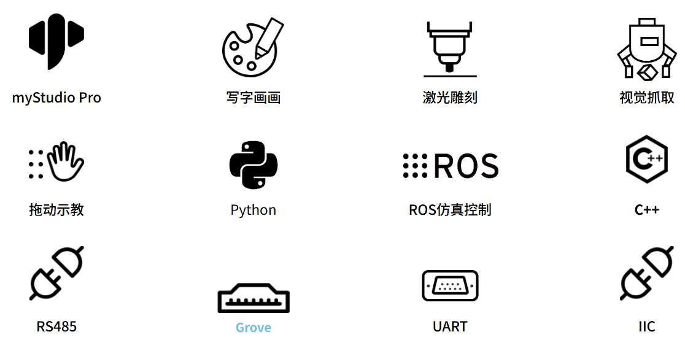
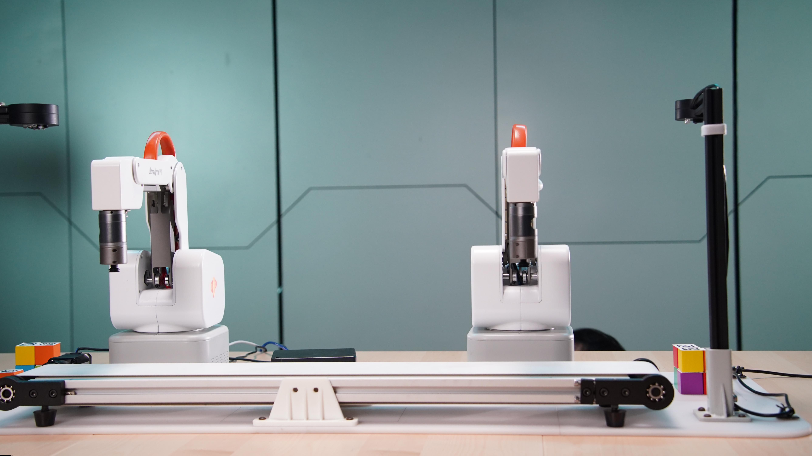

产品简介
1. 产品概述
ultraArm P1
高精度 4 自由度智能码垛步进机械臂
1.1 产品简介
ultraArm P1 是一款面向教育教学、科研探索、商业科技展示场景的超小型高精度 4 自由度智能码垛步进机械臂。其核心功能丰富多样，具备精准的操作能力，工作半径可达 360 毫米，有效负载为 650 克，重复定位精度高达 ±0.1 毫米（ISO 9283 标准），能够出色完成各类轻负载且对精度要求高的任务。
在控制方面，它依托内置 STM32 + ESP32 双核心控制系统，支持 WiFi 和蓝牙无线连接，可便捷连接电脑、平板、手机等终端设备。自带 2.4 寸液晶显示屏，内置 MiniRobot 操作系统，无需连接电脑即可独立完成拖动示教、轨迹复现、快速移动、零位校准等操作。配套 myStudio Pro 上位机软件，集成 myBlockly 积木编程与场景应用（写字画画、激光雕刻等），零基础用户也能轻松上手。其核心价值在于为不同领域的用户提供了一款高性能、易操作且扩展性强的桌面级机械臂解决方案，助力提升工作效率与创新能力。
1.2 设计理念
设计 ultraArm P1 的初衷，是为了满足日益增长的多样化应用需求。在教育领域，期望帮助学生更直观地接触和学习机器人技术，培养实践操作能力和创新思维；在科研场景中，为科研人员提供稳定、精准的实验操作工具，加速科研进程；在商业展示方面，打造具有吸引力的互动体验装置，提升展示效果。
1.3 设计目标
| 设计目标 | 描述 | 应用场景及特点 |
|---|---|---|
| 满足多样化高精度操作需求 | 360mm 工作半径覆盖标准台面，650g 负载支持多末端执行器，±0.1mm 重复定位精度控偏差。 | - 教育科研场景：四轴桌面级设计，适合运动学教学与路径规划验证，±0.1mm 重复定位精度为算法研究提供可靠硬件基础； - 商业展示场景：可进行写字画画、激光雕刻等精密操作，提升展示效果与互动体验 |
| 降低使用门槛与技术壁垒 | 多终端连接（WiFi/蓝牙/USB），内置 MiniRobot 本地系统 + myStudio Pro PC 软件，开箱即用。 | - 教育教学场景：学生可通过终端设备无线连接并操作机械臂，借助内置系统学习机器人知识； - 商业场景：无需复杂技术培训，MiniRobot 屏幕操作即可快速上手。 |
| 促进创新应用与拓展 | 提供 Python/C++/ROS1/ROS2 多语言 SDK，支持 MODBUS/TCP/IP 工业协议，丰富电气接口。 | - 科研场景：研究人员可基于开放 SDK 进行算法验证、视觉抓取等前沿课题研究； - 商业展示场景：利用激光雕刻、写字画画等应用方案，打造新颖互动展示体验。 |
1.4 产品特点

| 产品特点 | 特点描述 |
|---|---|
| 精准高效，桌面之选 | 工作半径：360mm, 负载：650g, 精度：±0.1mm（ISO 9283）, 自重：< 4.5Kg, 专为轻负载、高精度任务优化，是桌面级自动化与精密操作的理想搭档。 |
| 内置 MiniRobot 本地系统 | 自带 2.4 寸液晶屏 + 4 实体按键，内置 MiniRobot 操作系统。脱离电脑即可独立完成拖动示教、轨迹复现、快速移动、零位校准、无线连接管理等操作。 |
| 一体集成，简洁高效 | 一体化压铸机身，内置动力管线，外观简洁流畅。底座集成多种电气接口，告别外置电箱与复杂线缆。 |
| 自研碰撞检测 | 运动过程中实时监测机器人状态，毫秒级碰撞响应，检测到碰撞自动刹停，保障人机协作安全。 |
| 绝对值编码器 | 采用分辨率 4096 绝对值编码器，掉电保存绝对位置，重新上电无需反复标定。 |
| 零门槛操控 | myStudio Pro 跨平台控制中心 — 集成 myBlockly 积木编程 + 场景应用（写字画画、激光雕刻），Python/ROS/C++ 全栈编程支持，从图形化入门到高级语言开发全覆盖。 |
| 丰富配件功能集成 | 可适配多种末端执行器：快换笔夹、柔性夹爪、吸泵、激光雕刻头。可实现激光雕刻、写字画画、码垛搬运、视觉抓取等任务。 |
| 全平台开发支持 | 支持 Windows、Linux、Mac OS、iPad OS、HarmonyOS、Android 全平台。提供 Python/C++/ROS1/ROS2 SDK，支持 MODBUS/TCP/IP 标准化通信协议。 |
2. 产品应用
2.1 用户群体
| 教育工作者与学生 | 面向中高职及本科院校的机器人、自动化、机电一体化等专业，提供从四轴运动学到工业场景的进阶教学路径。支持单臂基础教学 → 视觉抓取 → 传送带联动 → 双臂协同拆码垛的逐级实训，配套完整教材大纲与实验指导，覆盖课堂教学、实训考核与技能竞赛全场景。 |
| 创客与开发者 | 为创客空间及个人开发者提供桌面级开源硬件平台。开放 Python/C++/ROS1/ROS2 SDK 及 I²C、PWM、RS485 等电气接口，支持从快速原型验证到视觉算法、多机协同、具身智能等前沿项目的全栈开发。 |
| 商业展示与轻量作业用户 | 面向商业展厅、培训机构及轻工场景，内置写字画画与激光雕刻应用，开箱即用。配合 Modbus 协议与 IO 接口，可搭建智能售货、动态分拣、激光定制等桌面级自动化方案，兼具展示效果与实用价值。 |
2.2 应用场景

| 用户群体 | 核心应用场景（开箱即用） | 扩展应用场景（套件进阶） |
|---|---|---|
| 教育领域的教师和学生 | - 四轴运动学入门：以 P1 四轴结构讲解坐标系变换、正逆运动学与轨迹规划原理。 - 拖动示教与积木编程：手动引导录制轨迹并回放，拖拽 myBlockly 积木块快速体验机器人编程。 - 单臂基础搬运：通过 Python API 控制机械臂完成抓取、移动、放置等基础任务。 |
- 高级算法开发：基于 Python/C++/ROS2 进行路径规划、速度插补等算法的开发与实测。 - 人工智能集成：开发视觉识别抓取、动态分拣等 AI 综合应用项目。 |
| 创客和技术开发者 | - 桌面级原型验证：快速搭建自动化方案，验证末端工具（夹爪/吸泵/笔夹/激光）的工作流程。 - 硬件接口自由扩展：底座 10 路 IO、I²C、PWM 接口，可外接传感器、舵机等自定义模块。 - 跨语言二次开发：基于 Python/C++/ROS1/ROS2 SDK 和通信协议包，用任意语言控制机械臂。 |
- 前沿课题探索：作为实体实验平台，用于运动控制、人机协作等方向的研究。 - 复合系统开发：搭配视觉模组、传送带等外设，构建个性化的小型自动化工作站。 |
| 商业展示与轻量作业 | - 创意互动展示：内置写字画画与激光雕刻应用，开机即用，在展会与课堂中吸引观众互动。 - MiniRobot 独立演示：无需电脑，仅凭机身屏幕和按键即可控制机械臂完成预设动作。 - 桌面轻量分拣：通过 Modbus RTU 协议对接 PLC，模拟小型上下料与样品分拣流程。 |
- 产线自动化集成：通过 Modbus/TCP/IP 等协议与 PLC 通信，集成入小型产线执行上下料、码垛分拣等任务。 - 实验室自动化：替代人工完成移液、样本转运等重复性实验操作。 |
3. 支持的扩展开发
ultraArm P1 在教育和科研领域中极具价值，特别是在 Python 和 ROS（Robot Operating System）这两个广泛使用的开发环境中。这些环境提供了强大的支持，使得 ultraArm P1 能够广泛应用于机器学习、人工智能研究、复杂运动控制以及视觉处理任务中。同时搭配柔性夹爪、吸泵、笔夹、激光雕刻头等多种配件，可以尽情发挥 ultraArm P1 的创意想法。
| Python | 完善的 Python API 库，覆盖关节、坐标、IO、夹爪、吸泵等全部控制接口。 |
| C++ | 提供 C++ 动态库，支持坐标控制、角度控制、IO 控制、夹爪控制等自由开发。 |
| ROS1 / ROS2 | 双版本支持，集成 RVIZ 仿真环境，适配模块化机器人开发。 |
| myBlockly | 拖拽式积木编程，零代码门槛，适合教学入门与快速原型。 |
| 通信协议 | TCP Socket / RS485 / MODBUS RTU / 串口协议包，适配工业互联。 |
| 硬件接口 | I²C / PWM / GPIO(3.3V)×10 / UART，可外接传感器、舵机等模块。 |
| 跨平台 | Windows / Linux / macOS / iPad / Android / 鸿蒙。 |
| myStudio Pro | 是一款一站式机器人编程控制软件，支持可视化编程交互、快捷移动控制、拖动教学、机器人状态查询配置，集成 myBlockly 积木编程模块和场景应用。 |